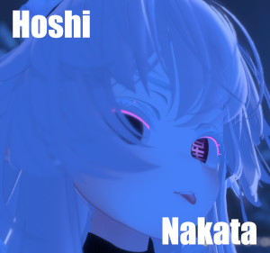

ГАЛЕРЕЯ


ОПИСАНИЕ
Хоши Наката — самая старая и загадочная дама. По легендам, она появилась из тени. На первый взгляд, эта старушка выглядит улыбчивой, позитивной, доброй, отзывчивой и внимательной. Но что же скрывается за этой милой улыбкой семидесяти летней бабушки? Несмотря на то что она очень хорошо сохранилась, ее возраст выдают седые волосы и ресницы с бровями, а также морщины на руках. К тому же, у нее ужасная память. Однако самым странным в ней является акульи хвост, который она прячет под длинной юбкой. Этот необычный атрибут придает ей не только таинственность, но и внушает уважение. Хоши Наката — это не просто бабушка, а существо, полное тайн и загадок.
Hoshi Nakata is the oldest and most mysterious lady. According to legends, she emerged from the shadows. At first glance, this elderly woman appears cheerful, positive, kind, responsive, and attentive. But what lies behind the sweet smile of this seventy-year-old grandmother? Despite her well-preserved appearance, her age is revealed by her gray hair and eyelashes, as well as the wrinkles on her hands. Moreover, she has a terrible memory. However, the strangest thing about her is the shark tail that she hides beneath her long skirt. This unusual feature not only adds to her mystery but also commands respect. Hoshi Nakata is not just a grandmother; she is a being full of secrets and enigmas.